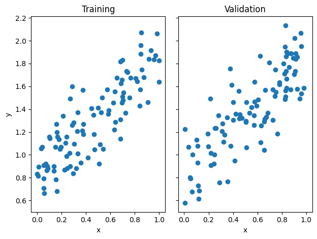
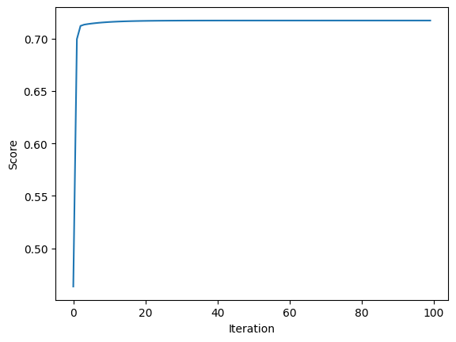
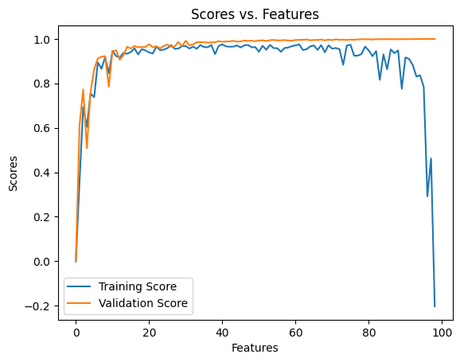
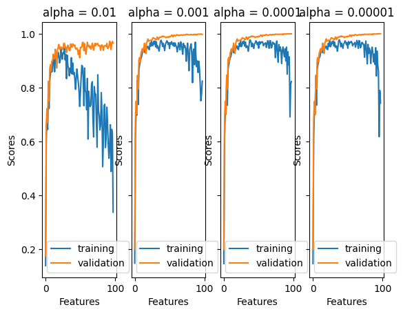

def fit_analytic(self, X, y):
X_ = self.pad(X)
self.w = np.linalg.inv(X_.T@X_)@X_.T@yLink to Raw algorithm code
https://github.com/aymankhan2003/ayman-machinelearningblog.github.io/blob/main/posts/linearregression/linearregression.py
Analytical Fit Method
An analytical solution for fitting a linear regression model is implemented in the code. It accepts a feature matrix X and a target variable vector y as input. To account for the intercept term, the code adds a column of ones to the feature matrix X. It then uses the normal equation to calculate the weights of the linear regression model, yielding an analytical solution. Inverting the product of the transposed padded feature matrix, the padded feature matrix, and the target variable vector yields the weights. The weights obtained are saved in the variable self.w.
Gradient Fit Method
def fit_gradient(self, X, y, max_iter, alpha):
X_ = self.pad(X)
self.w = np.random.rand(X_.shape[1])
self.score_history = []
P = X_.T@X_
q = X_.T@y
for _ in range(max_iter):
gradient = (P@self.w - q)
self.w -= alpha * gradient
self.score_history.append(self.score(X, y))For fitting a linear regression model, the code uses a gradient descent algorithm. It accepts a feature matrix X and a target variable vector y as input. Using the gradient of the cost function, the algorithm iteratively updates the weights of the linear regression model. To account for the intercept term, the padded feature matrix X_ is computed by adding a column of ones to X. The weights are randomly assigned, and the algorithm iterates a set number of times. It calculates the gradient, updates the weights, and stores the training score at each iteration. The score method is used to compute the training score.
The following function will create both testing and validation data
import numpy as np
from matplotlib import pyplot as plt
def pad(X):
return np.append(X, np.ones((X.shape[0], 1)), 1)
def LR_data(n_train = 100, n_val = 100, p_features = 1, noise = .1, w = None):
if w is None:
w = np.random.rand(p_features + 1) + .2
X_train = np.random.rand(n_train, p_features)
y_train = pad(X_train)@w + noise*np.random.randn(n_train)
X_val = np.random.rand(n_val, p_features)
y_val = pad(X_val)@w + noise*np.random.randn(n_val)
return X_train, y_train, X_val, y_valGenerate data with the following code
n_train = 100
n_val = 100
p_features = 1
noise = 0.2
# create some data
X_train, y_train, X_val, y_val = LR_data(n_train, n_val, p_features, noise)
# plot it
fig, axarr = plt.subplots(1, 2, sharex = True, sharey = True)
axarr[0].scatter(X_train, y_train)
axarr[1].scatter(X_val, y_val)
labs = axarr[0].set(title = "Training", xlabel = "x", ylabel = "y")
labs = axarr[1].set(title = "Validation", xlabel = "x")
plt.tight_layout()
Using Linear Regression on sample data
from linearregression import LinearRegression
LR = LinearRegression()
LR.fit(X_train, y_train) # I used the analytical formula as my default fit method
print(f"Training score = {LR.score(X_train, y_train).round(4)}")
print(f"Validation score = {LR.score(X_val, y_val).round(4)}")Training score = 0.7172
Validation score = 0.6621Estimated Weight Vector
LR.warray([1.00952437, 0.83414312])Getting the same value for the weight vector using gradient descent
LR2 = LinearRegression()
LR2.fit(X_train, y_train, method = "gradient", alpha = 0.01, max_iter = 100)
LR2.warray([1.00945598, 0.83417674])Seeing how the score changed over time and because we’re not using stochastic gradient descent, the score should increase monotonically in each iteration, and it does!
plt.plot(LR2.score_history)
labels = plt.gca().set(xlabel = "Iteration", ylabel = "Score")
Experiment
An experiment in which p_features, the number of features used, is increased, while holding n_train, the number of training points, constant.
n_train = 100
n_val = 100
noise = 0.2
trainingscore = []
validationscore = []
LR = LinearRegression()
for p_features in range(n_train - 1):
X_train, y_train, X_val, y_val = LR_data(n_train, n_val, p_features, noise)
LR.fit(X_train, y_train)
trainingscore.append(LR.score(X_val, y_val))
validationscore.append(LR.score(X_train, y_train))
# plot it
plt.plot(trainingscore, label = "Training Score")
plt.plot(validationscore, label = "Validation Score")
plt.legend(loc='best')
labels = plt.gca().set(title = "Scores vs. Features", xlabel = "Features", ylabel = "Scores")
plt.show()
Looking at both scores, we can see that as both approach the score of 1.0, they start to cluster in a straight line and slowly the training score starts to decrease, indicating there could be some overfitting within the data. This means that as our model works on the training data it learns too much, while also failing to properly set upon the validation data.
LASSO Experiment
from sklearn.linear_model import Lasso
L = Lasso(alpha = 0.01)Fitting this model on some data and checking the coefficients
p_features = n_train - 1
X_train, y_train, X_val, y_val = LR_data(n_train, n_val, p_features, noise)
L.fit(X_train, y_train)Lasso(alpha=0.01)In a Jupyter environment, please rerun this cell to show the HTML representation or trust the notebook.
On GitHub, the HTML representation is unable to render, please try loading this page with nbviewer.org.
Lasso(alpha=0.01)
The score on the validation set is high, which might be different from what is found with pure linear regression.
L.score(X_val, y_val)0.518963781877207Using LASSO
n_train = 100
n_val = 100
noise = 0.2
L1 = Lasso(alpha=0.001)
L2 = Lasso(alpha=0.0001)
L3 = Lasso(alpha=0.00001)
Ltrainingscore = []
Lvalidationscore = []
L1trainingscore = []
L1validationscore = []
L2trainingscore = []
L2validationscore = []
L3trainingscore = []
L3validationscore = []
for p_features in range(1, n_train - 1):
X_train, y_train, X_val, y_val = LR_data(n_train, n_val, p_features, noise)
L.fit(X_train, y_train)
Ltrainingscore.append(L.score(X_val, y_val))
Lvalidationscore.append(L.score(X_train, y_train))
L1.fit(X_train, y_train)
L1trainingscore.append(L1.score(X_val, y_val))
L1validationscore.append(L1.score(X_train, y_train))
L2.fit(X_train, y_train)
L2trainingscore.append(L2.score(X_val, y_val))
L2validationscore.append(L2.score(X_train, y_train))
L3.fit(X_train, y_train)
L3trainingscore.append(L3.score(X_val, y_val))
L3validationscore.append(L3.score(X_train, y_train))
# plot it
fig, axarr = plt.subplots(1, 4, sharex = True, sharey = True)
axarr[0].plot(Ltrainingscore, label = "training")
axarr[0].plot(Lvalidationscore, label = "validation")
axarr[0].legend(loc='best')
labs = axarr[0].set(title = "alpha = 0.01", xlabel = "Features", ylabel = "Scores")
axarr[1].plot(L1trainingscore, label = "training")
axarr[1].plot(L1validationscore, label = "validation")
axarr[1].legend(loc='best')
labs = axarr[1].set(title = "alpha = 0.001", xlabel = "Features", ylabel = "Scores")
axarr[2].plot(L2trainingscore, label = "training")
axarr[2].plot(L2validationscore, label = "validation")
axarr[2].legend(loc='best')
labs = axarr[2].set(title = "alpha = 0.0001", xlabel = "Features", ylabel = "Scores")
axarr[3].plot(L3trainingscore, label = "training")
axarr[3].plot(L3validationscore, label = "validation")
axarr[3].legend(loc='best')
labs = axarr[3].set(title = "alpha = 0.00001", xlabel = "Features", ylabel = "Scores")C:\Users\ayman\anaconda3\envs\ml-0451\lib\site-packages\sklearn\linear_model\_coordinate_descent.py:631: ConvergenceWarning: Objective did not converge. You might want to increase the number of iterations, check the scale of the features or consider increasing regularisation. Duality gap: 5.010e-02, tolerance: 3.682e-02
model = cd_fast.enet_coordinate_descent(
C:\Users\ayman\anaconda3\envs\ml-0451\lib\site-packages\sklearn\linear_model\_coordinate_descent.py:631: ConvergenceWarning: Objective did not converge. You might want to increase the number of iterations, check the scale of the features or consider increasing regularisation. Duality gap: 4.504e-02, tolerance: 3.682e-02
model = cd_fast.enet_coordinate_descent(
Key Takeaway: As Learning rate increases, the LASSO algrotihm declines in the way it performs as we see a shift in paradigm in comparisons of learning rates from 0.01 to 0.00001. Overall, a smaller learning rate helps to improve the data in terms of overfitting as it reduces the declination of clusters.